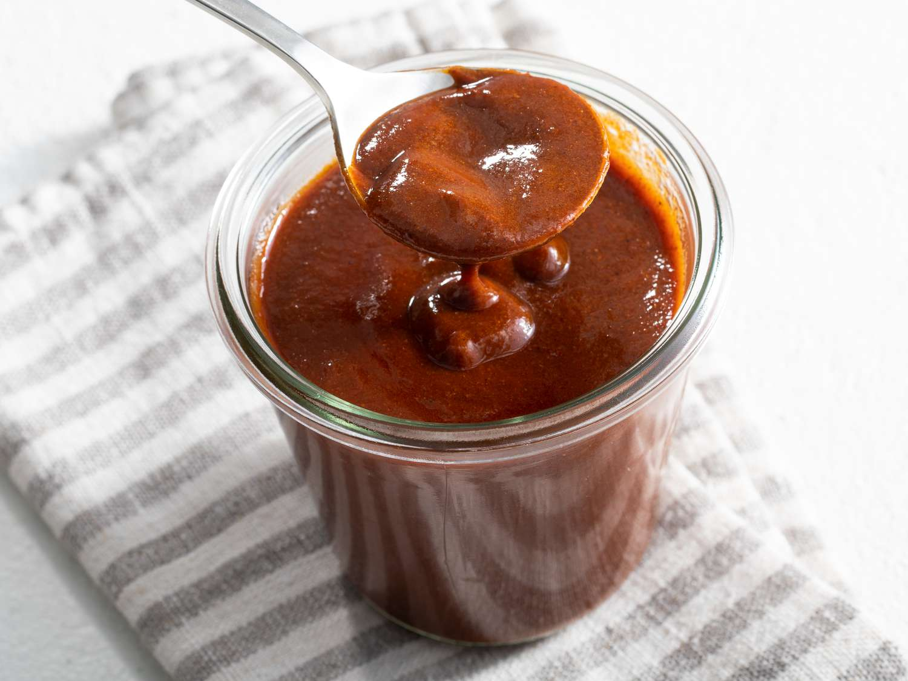

Enchilada Sauce

A quick recipe for making enchilada sauce on the stove. Better than canned!
You're basically making a roux here, so if you've ever made bechamel before than you'll know what you're doing!
Just pour some sauce in the bottom of your dish, fill your tortillas however you want, roll them up and place them in the dish, and then top with more sauce.
Ingredients
Makes 1 small jar
- 3 tbsp olive oil
- 3 tbsp flour
- 1 tbsp chili powder
- 1 tsp cumin
- 1/2 tsp garlic powder
- 1/4 tsp dried oregano
- 1/4 tsp salt
- pinch cinnamon
- 2 tbsp tomato paste
- 2 c broth
- 1 tsp vinegar
- pepper to taste
Steps
- Mix the dry ingredients in a small bowl.
- Heat the oil in a small sauce pan, whisk in the flour and spices mixture, and cook for 1 minute.
- Whisk in the tomato paste, and then slowly add the broth.
- Simmer for 5 minutes.
- Remove from heat and add the vinegar and pepper.